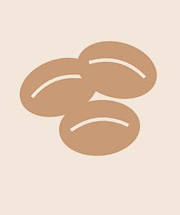

Es Kopi Kelapa
Espresso segar berpadu dengan air kelapa muda asli dan sedikit gula aren.
Rp 22.000Sejak 2019 - Diracik di Rumah, Disajikan dengan Hati
Kopi Nusantara menghadirkan biji kopi pilihan dari pelosok Indonesia, diseduh langsung setiap hari tanpa bahan pengawet. Nikmati dari layar HP, tablet, atau laptop Anda - tampilan kami menyesuaikan di mana pun Anda membuka halaman ini.

Berawal dari dapur rumahan di tahun 2019, Kopi Nusantara tumbuh dari kecintaan terhadap biji kopi lokal Indonesia - dari Gayo, Toraja, hingga Kintamani. Kami percaya secangkir kopi terbaik lahir dari proses yang jujur dan bahan yang berkualitas.
Isi formulir berikut, tim kami akan segera menghubungi Anda kembali.
Alamat: Jl. Melati No. 12, Bandung
WhatsApp: 0812-3456-7890
Jam Buka: Setiap hari, 08.00 - 21.00